PL2 W7K was a labour of passionate love by four second-year Engineering Physics bozos students at the University of British Columbia.
Depending on your privacy permissions on Chrome and Windows, there may be some uptown funk with the email links. Here are our emails, laid out in plaintext if you want to reach out to us! (nowhere near as cool as the buttons):
Save ewoks. Bridge gaps. Filter and detect varying IR signals. Zoom down ziplines. Look cool.
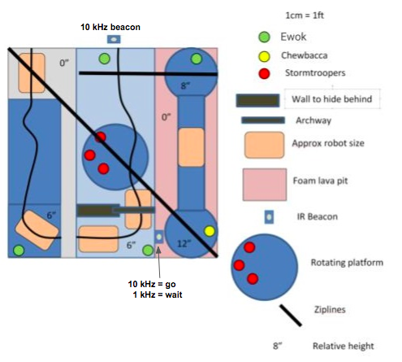
PL2 W7K was tasked with a perilious journey.
Navigate black tape using custom-coded PID control
Build a mechanism to autonomously detect the ewoks scattered at different locations
Filter and read different IR frequency signals
Identify and cross two 6" gaps
Navigate across a narrow region with no tape
Build a mechanism to return the ewoks to the start using a zipline
Complete a run within two minutes
Despite several challenges, the competition lent itself open to a myriad of different approaches. Teams could opt to skip the IR beacon entirely and go to Chewey, others opted to complete the whole course, and others still decided to complete the course partially, optimizing for speed and reliability instead.
The official competition document can be found
here!
Our approach to completing the course was to have a separate mechanism for each obstacle. We designed a forklift-style mechanism to lay a bridge over the gaps. The infrared-triggered spinning platform was avoided using an active-filtering IR detection circuit and a QSD122 phototransistor.
The bridge mechanism allowed us to avoid requiring the first zipline, while the second was used to transport our ewok-filled basket back to the "safe zone". The pathless bridge would be traversed using an edge detect-and-follow algorithm.
PL2 was designed to be compact, fast, and nimble. The Ewok-grabbing claws employed an optical detection mechanism using an IR emitter and phototransistor to create a beam that would be interrupted when an ewok was present. The fast detection allowed the robot to grab the ewoks without ever having to stop moving.
Ultimately, as time became constrained, we shifted our focus to having PL2 reliably pick up three ewoks and then perform a turn-around deploy maneuveur. This allowed us to perfect existing mechanisms and work toward speed and reliability, which paid dividends on competition day.
CAD Designs
An overview of our CAD and mechanical design decisions
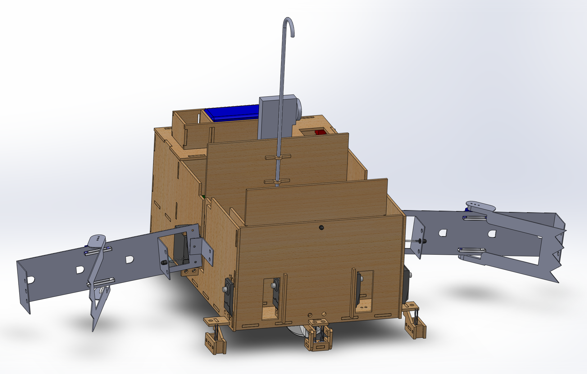
We built our mechanical components using OnShape and SolidWorks. The majority of our components, such as our chassis
were lasercut, while a few other parts were water jet, such as the claws. We focused our mechanical design on keeping PL2 compact, modular and light. This allowed us to execute certain maneuveurs with more precision and enabled rapid prototyping (e.g swapping out different claw prototypes was a breeze).
Chassis
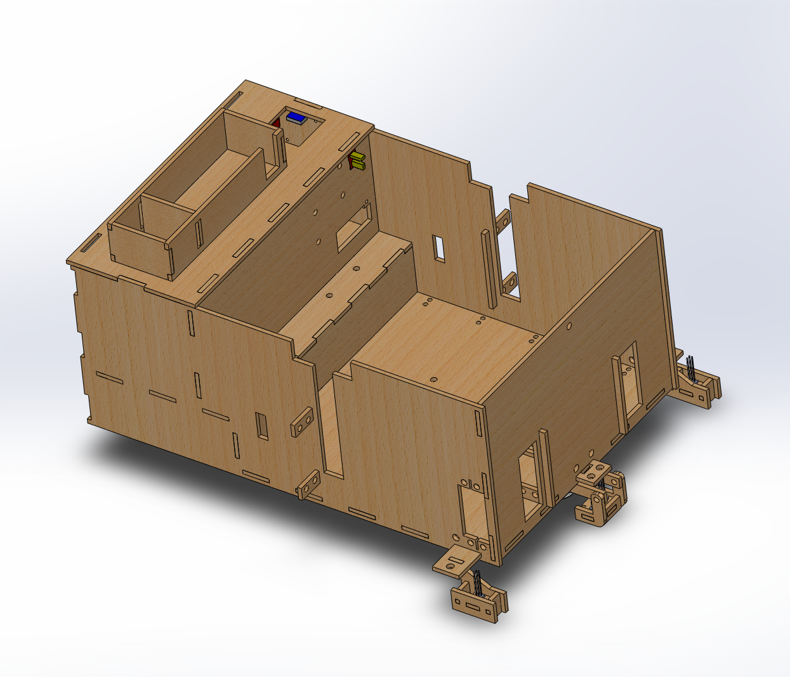
Our chassis was lasercut with slots to allow for quick and easy assembly without the need for glue or screws. Compartments for electrical components, batteries, servos and the drivetrain (which is why there is an elevated section in the interior) were all built in.
Claw
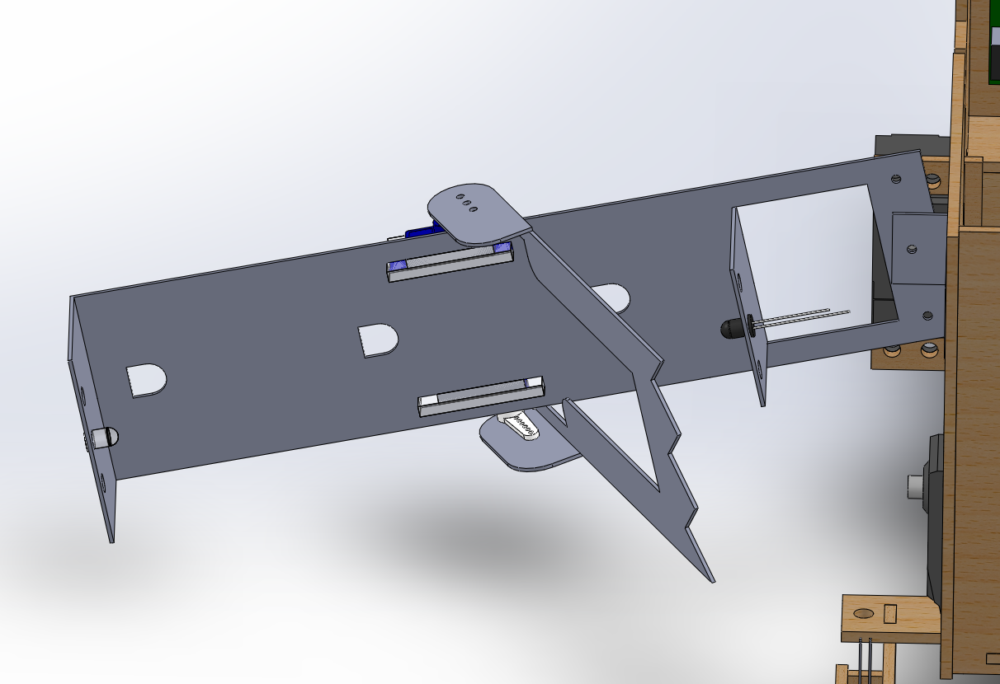
Our claw consisted of two components - the clamp and arm. The clamp and arm were both powered by servos and made out of light aluminum sheet metal. Using throughholes to mount an IR emitter and phototransistor on the clamp, we created an optical detection mechanism.
Basket deployment
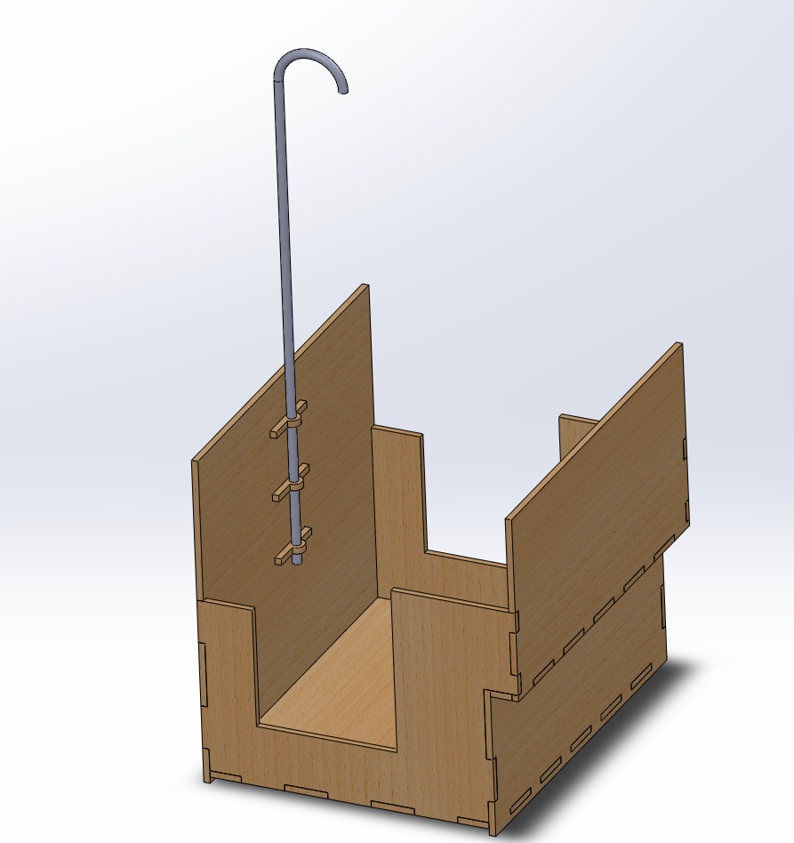
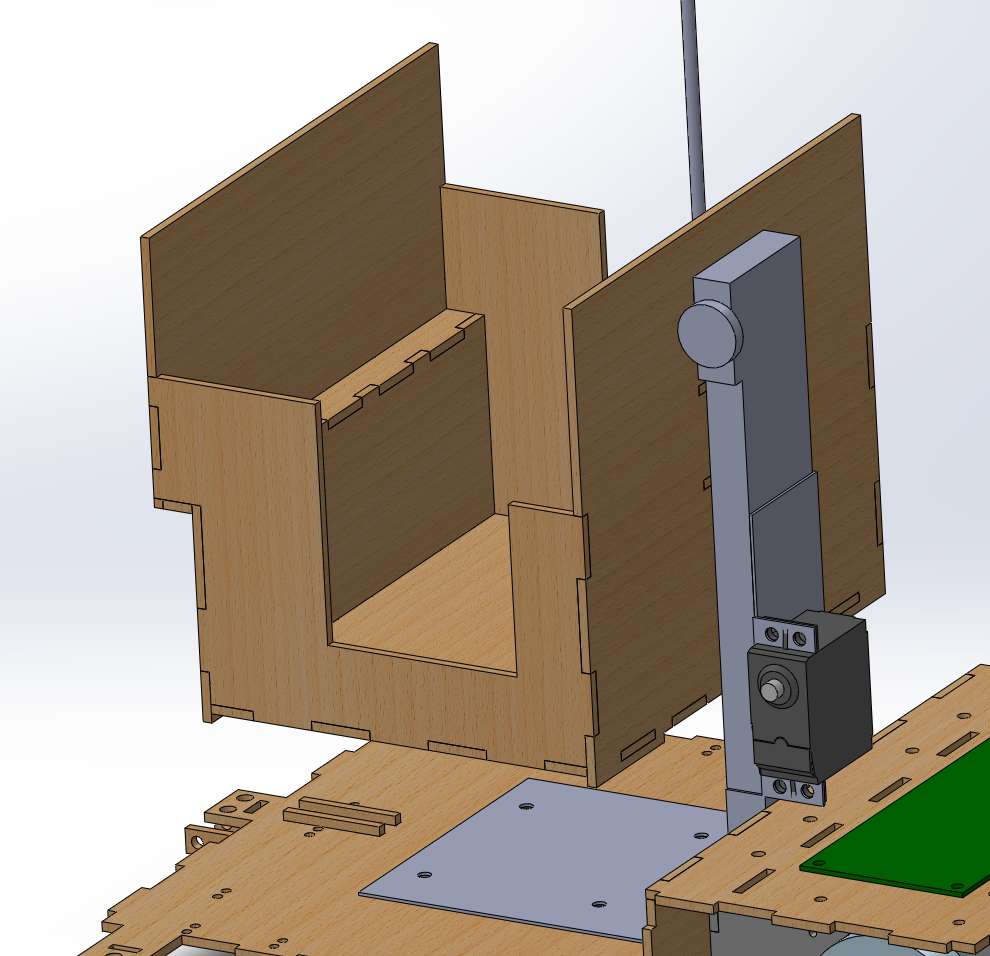
Our basket was a simple enough mechanism, consisting of wide slats on the sides to allow the arms to reach in and drop ewoks, and a curved pole with washers to latch onto the zipline.
The basket deployment mechanism was built by modifying a fixed limit servo to become a continuous servo which pulled a string-and-pulley, lifting the platform up the guiderail. We chained two limit switches together to create an AND gate for use in the control logic.
Based on the button states, we could determine how long to lift the platform, and when to begin lowering it once it had the zipline.
Drivetrain
MAXIMUM OVERDRIVE
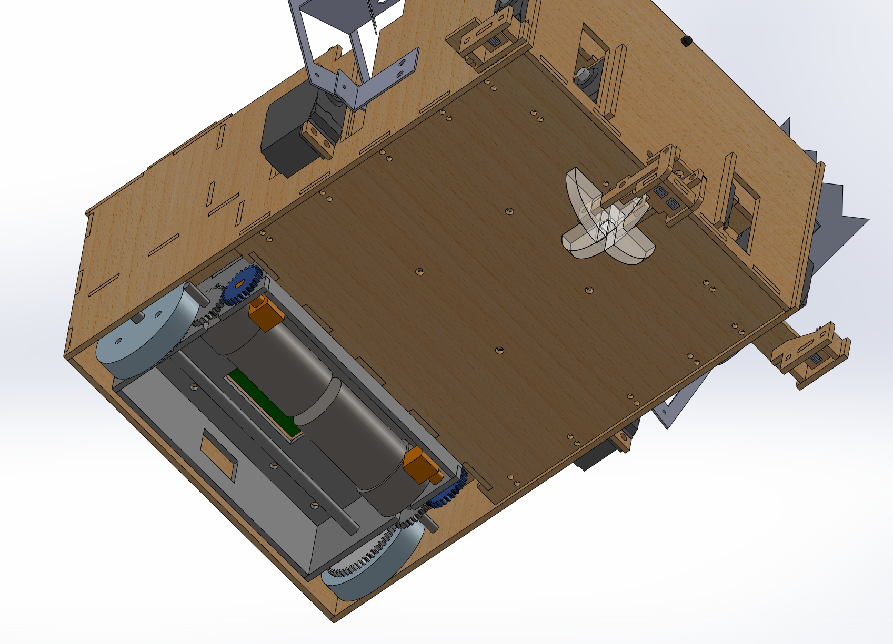
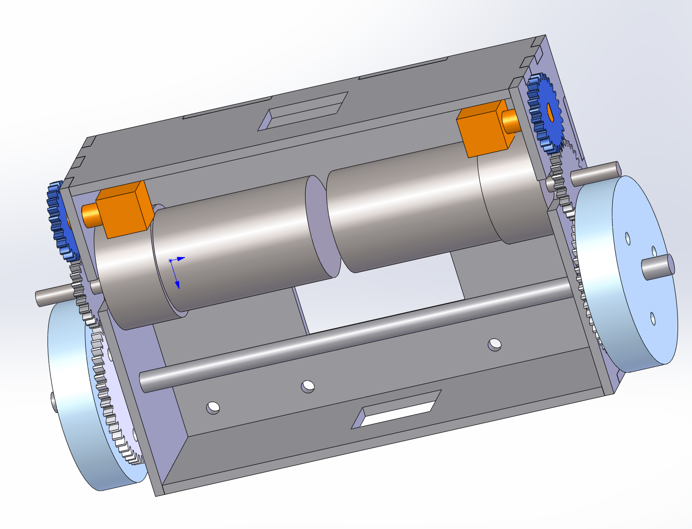
Our drivetrain was kept as a modular component that could be quickly popped in and out of the main chassis. This allowed us to finick with different gear ratios and debug issues with the motors separately.
The additional gear and orange boxes you may note above were for rotary encoders to keep track of distances and allow for finer movement control. We ultimately abandoned rotary encoders as we found we were able to get sufficient precision using our QRD sensors and timed movements.
Circuitry, Wiring and Electric Bugaloo
An overview of the key circuits used to drive motor logic and filter infrared frequencies, and wire management.
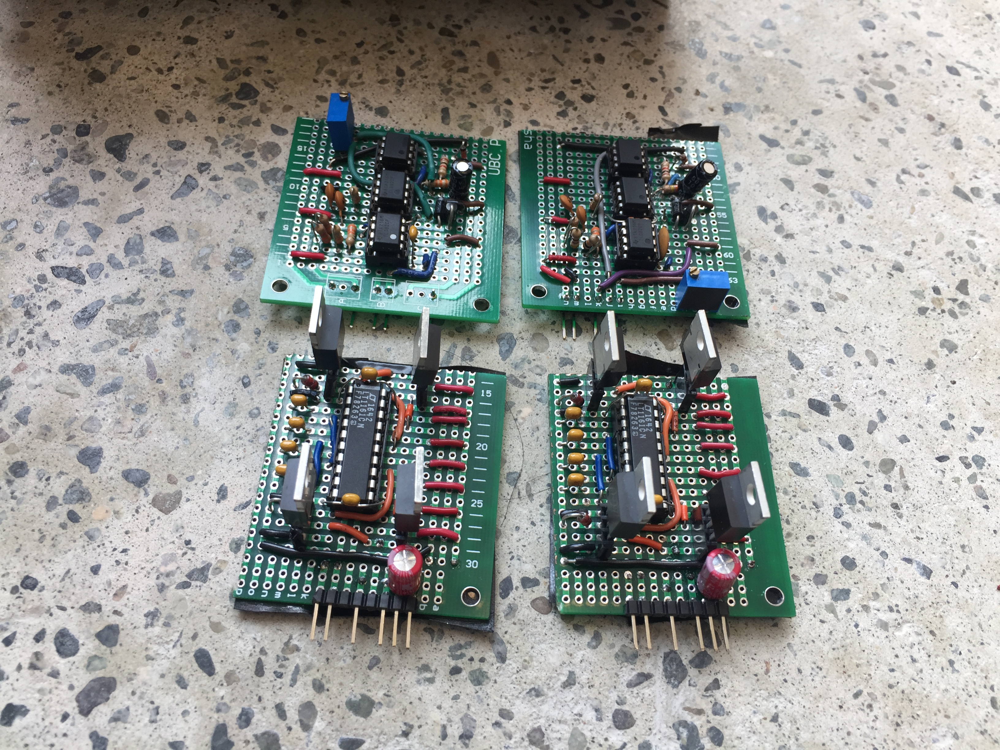
Motor Drivers
PL2 used H-bridges to allow motors to be driven at high voltages and currents while being controlled through low-voltage signals from the Bluepill mirco-controller.
Our h-bridges consist of electrical switches (N-Type MOSFETS) controlled by a high-side gate driver IC chip which recieved PWM outputs from the Bluepill.
Opposite pairs of MOSFETs were activated so current could flow through the motor in two directions allowing both forward and backwards travel.
Each H-bridge was decoupled through capacitor along input and output voltage lines so that noise propagation was kept to a minimum to not influence other componants in the electrical system.
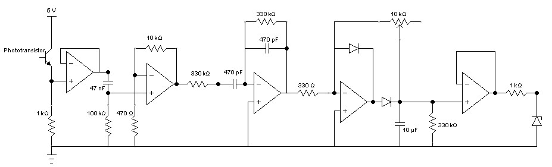
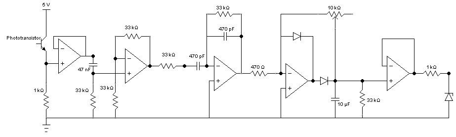
IR Detection Circuits
One of the obstacles of the course was decoding an infrared signal beacon. This beacon was placed just before the archway, and its signal would switch randomly between flashing at a frequency of 1kHz and 10kHz. If the robot passed through the archway when the signal was at 1kHz a platform beyond the archway would start rotating, breaking the tape the robot used to navigate the course. PL2 had two IR detection circuits that were used to differentiate the 1kHz and 10kHz signals. Both circuits were identical, with the exception of the filter explained below.
This analog circuit was a series of signal manipulators to decode the flashing of the beacon into a signal understood (i.e a digital high or low) by the Bluepill mirco-controller. The components of the circuit are as follows:
DC-Block: The DC-Block was used to eliminate the steady 60Hz infra-red emitted from standard household lights (i.e ambient lighting) as a part of the competition enviroment.
Amplification: At a distance that was relevant to robot manuverability the signal would come across quite weak (in the milli-volts range) the amplificating was used to strengthen the incoming signal
Filter: Since PL2 was required to differentiate 1kHz and 10kHz, the respective circuits were built to ignore the opposite frequency.
Analog to digital conversion and final amplification: The final conversion is required to turn the detection of the appropriate signal into a digital high that the mirco-controller may interpret. The amplification is required in the event the non-fluctuating voltage is not large enough for the mirco-controller to read a digital high.
Voltage inverter
A simple voltage inverter was built to supply -VCC to the OpAmps.
Encoders
Originally it was planned to include encoders in the development of PL2 to aid in the navigation of the course. In retrospect we should have started the development of the Encoder interpretation much sooner to ensure reliable usage. The primary difficulty was recieving a steady, noise-free pulse signal from the encoders. As an encoder rotates two switches are turned on and off. The mirco-controller may interpret distance through the number of times the switches are turned on, and direction through the high/low phase shift between the two switches. Due to mechanical inaccuracies the signal is very noise and, initially, the mirco-controller would read high when it should not have, thus, misinterpretation the signal.
To fix this we built a RC filter circuit and Schmitt-trigger to filter out high frequency noise, and to employ hysterisis to ensure a clean pulse signal could be read by the mirco-controller. As mentioned before, this development occured too late, for we had already started to used hardcoded motor-on times for precise movments.
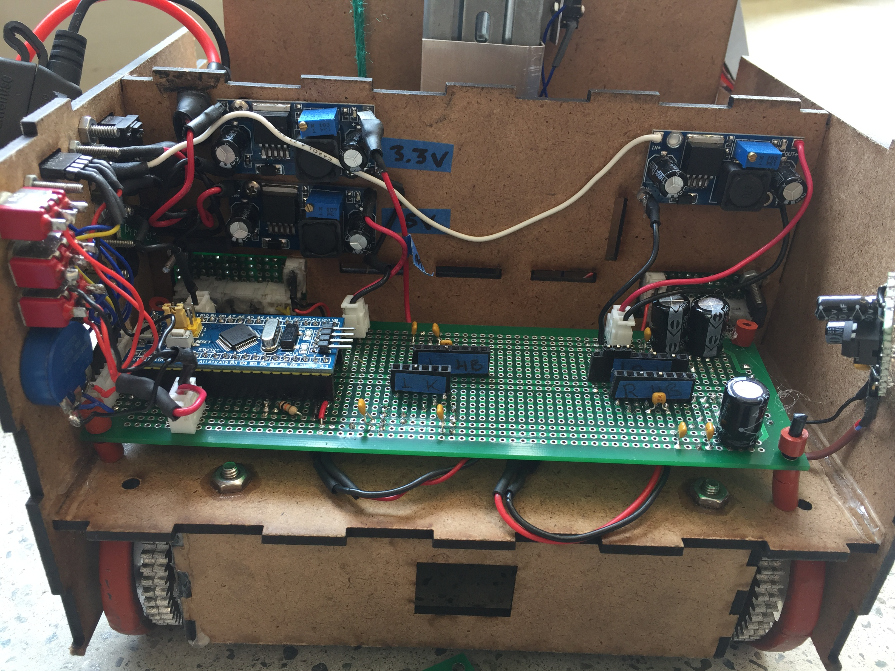
Direct IR Sampling
Due to the extremely fast clock cycle of the Bluepill mirco-controller (72MHz) it was also possible to directly interpret signals at a frequency in the kHz range as required for the competition. The circuit was simply an amplifier and comparator to ensure the signal was properly read, and the sine wave was converted into a pulse. This development also occurred too late in the 6 week timeline and while it did work it was a back-up plan in the event the analog circuits failed for some unknown reason.
Control Code
Written in C++ and powered by an STM32 Blue Pill
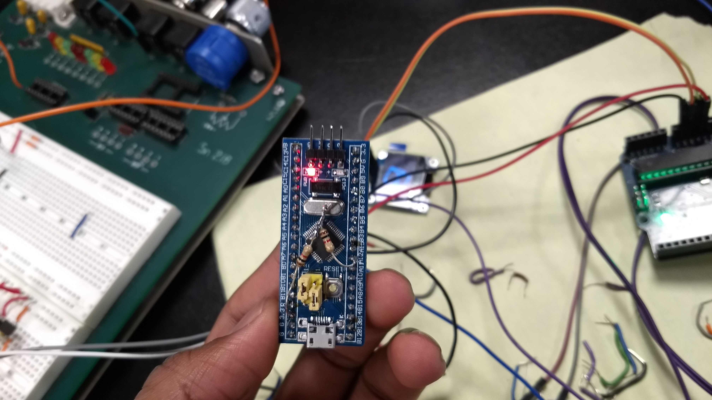
STM32 Blue Pill
The compute power that ran PL2's brains was the STM32 Blue Pill microcontroller. With several analog, PWM and digital pins, and a fast clock cycle, this board allowed us to integrate all the electrical components that we needed to without running out of pins.
State Machine and Object Abstraction
One of the key challenges to making the robot was creating a sensible and easy to follow logic flow. To do so, we created state diagrams and a virtual state machine that allowed us to track "where and what" the robot was doing at all times. This provided certainty to the motions the robot was doing, and allowed us to couple different mechanisms (such as basket raising, bridge lowering, claw mechanisms, etc.) to the motor control, making it easy to express what actions we wanted the robot to take. For example, in the control states, we may delegate states 10-19 as "a bridge dropping sequence". In each state, a different component of the maneuver would be executed (find the edge, stop the motors, back up, lower the bridge, wait, etc.)
Using the state machine in conjunction with abstracting different modules on the robot to their own particular class allowed for the code to be kept clean, modular and easy to debug.
Menu System
Additionally, we also developed a menu system using the onboard Blue Pill memory, EEPROM, to allow us to quickly alter values and make rapid changes without having to resort to uploading code after every proposed change. This allowed us to toy with several key variables for different maneuvers (such as PID constants for tap efollowing, timing vlaues for different maneuvers, and speeds) in a way conducive to rapid testing.
Project Management
Delegation of tasks, milestones and adhering to a timeline
.
Version Control
As you may be able to tell, we relied on Git to manage our documentation and code. This allowed us to work concurrently on several different components of the robot while ensuring everyone was still being kept up to date with the latest devleopments.
Task Management
Building from scratch is quite an undertaking, with several tasks that can be tackled concurrently. To allow us to delegate tasks efficiently and formulate realistic scheduling estimates, we used Trello. This forced us to express, in tangible terms, the work that needed to be done and then allocate it effectively among our members. It also allowed us to assess what tasks may be blocking others, enabling us to allocate ourselves to the work more efficiently.
Results and Lessons Learned
This section highlights our competition day performance and our major take-aways.
The Result
PL2 was able to consistently rescue 3 of the 5 plushies, obtaining a total of 9 points (out of 17 - Chewbacca was worth extra). Due to time constraints, we opted to focus on reliably completing the first half of the course than pursuing the second half, meaning we forfeited Chewbacca. This allowed us to focus on speed and consistency, snagging us 5th place of 16 teams in the final competition.
The Takeaway
The team picked up many "dos and don'ts" along the way, as we strongly noticed what worked and what did not work. Perhaps our biggest takeaway was to plan "the small things" thoroughly to avoid spending time on them later. Examples:
Avoid using header pins - they do not make reliable connections in wired applications
Commit to wire placement - Many times we were using connections that would disconnect consitantly, creating a very unreliable system. Having never designed wire managment before we were worried about changing are minds with how we did something, thus having to restart. We ended up changing how we managed our wired three times (complete reboot with solder) anyway and it would have saved time if we just commited and tried sooner.
Decoupling Capacitors - Saved our lives. At one point when the 14.5V rail was activated and our motors started the Bluepill mirco-contoller would reset. This was likely caused through an extremly fast voltage drop along the 3.3V rail powering the mirco-contoller. A 500uF capacitor fixed that up instantly through maitining the 3.3V rail high enough for the brief moment it dropped.
Design modularly - ensure that each part/system can be easily accessed, replaced and maintained without interfering with other systems. We learned this specifically with our powertrain. It was detachable, thus, changes could be made without invading on the rest of the chassis design.
Continuously test - test subsystems, systems and sequences not only for functionality but also for consistency alongside development to save time debugging
Sample size - consider outliers in your analysis but do not base your judgement single occurrences (for both failures and successes)
Task Delegation - At some points, mainly during testing, it was not necessary for every group memeber to be present. In the event of too many people working on one componant the multitude of opinions bogged down progress. This being said, it was critical in many situations that more than one person was reviewing work to ensure mistakes where not being missed for a long time.
Late Nights - Sometimes staying up to un-Godly hours was more of a way to have fun with the lads than actually working efficiently..